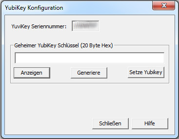
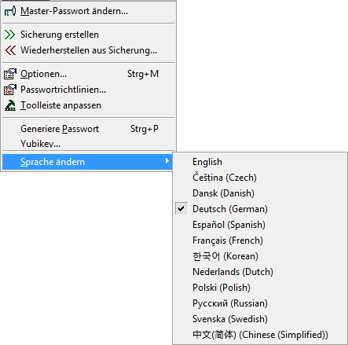

Bei der Auswahl von Optionen... erscheint ein Dialog mit mehreren Reitern. Viele der
Einstellungen in Password Safe können hier eingesehen und bearbeitet werden. Um mehr
über einen bestimmten Reiter zu erfahren, wählen Sie ihn unten aus:
Hier können Sie die standardmäßigen und benannten Passwortrichtlinien verwalten. Es können
bis zu 255 benannte Passwortrichtlinien eingerichtet werden. Der Name einer benannten
Passwortrichtlinie darf nicht länger als 255 Zeichen sein.
Toolleiste anpassen
Wählen Sie die Symbole aus die in der Toolleiste dargestellt werden sollen (oder auch nicht).
Die Reihenfolge der Symbole kann dabei umgestaltet werden.
Generiere Passwort
Erstellt ein Passwort nach der eingestellten Passwortrichtlinie, und legt das generierte
Passwort nach Drücken der Taste Generierung in die Zwischenablage ab. Das Passwort in
der Zwischenablage kann dann von anderen Anwendungen verwendet werden. Dazu können Sie die
standardmäßige Passwortrichtlinie, eine benannte Passwortrichtlinie oder eine spezifische
Richtlinie (mit dem Dialog eingegeben) auswählen.
Yubikey
Hiermit können Sie Ihr optionales Gerät YubiKey einstellen,
um es als Zugang zu Ihrer Password Safe Datenbank einzusetzen, oder auch um ein
Sicherungs-YubiKey zu erzeugen, wenn es mal verloren oder kaputt gehen sollte.

Einstellen des YubiKey
Stecken Sie den YubiKey in einen USB-Anschluss Ihres Computers.
Wählen Sie den Menüpunkt Verwalten->Yubikey... aus. Der Dialog YubiKey
Konfiguration erscheint.
Die Seriennummer des YubiKey sollte angezeigt werden. Wenn dieses Feld leer ist, müssen
Sie nachprüfen ob der YubiKey richtig angesteckt ist.
Drücken Sie die Taste Generiere. Dies erzeugt einen 20 Byte langen geheimem
Schlüssel der auf den YubiKey geschrieben wird. Anschließend wird dieser Schlüssel verwendet
um den Zugang zu Ihrer Datenbank zu realisieren.
Drücken Sie die Taste Setze YubiKey. Der generierte Schlüssel wird auf den YubiKey
abgelegt, und gleichzeitig in verschlüsselter Form in die Password Safe Datenbank, um
damit ein Sicherungs-YubiKey zu konfigurieren.
Wenn die Konfiguration erfolgreich war, schließt der Dialog. Wenn nicht, erscheint eine
Fehlermeldung mit der Beschreibung des Fehlers.
Drücken Sie die Taste Schließen um das Dialogfenster zu verlassen.
Hinweis: Nach der Konfiguration des YubiKey, müssen Sie das Passwort der Datenbank
abändern um YubiKey einsetzen zu können. Dies ist in Master-Passwörter ändern beschrieben.
Sicherungs-YubiKey erstellen
Stecken Sie den YubiKey in einen USB-Anschluss Ihres Computers.
Wählen Sie den Menüpunkt Verwalten->Yubikey... aus. Der Dialog YubiKey
Konfiguration erscheint.
Die Seriennummer des YubiKey sollte angezeigt werden. Wenn dieses Feld leer ist, müssen
Sie nachprüfen ob der YubiKey richtig angesteckt ist.
Drücken Sie NICHT auf die Taste Generiere. Der angezeigte Schlüssel im Feld
"Geheimer YubiKey Schlüssel" ist der in dieser Datenbank abgelegter Schlüssel. Dieser
Schüssel wird dann auf dem Sicherungs-YubiKey geschrieben.
Drücken Sie die Taste Setze YubiKey. Der Schlüssel wird auf den Sicherungs-YubiKey
abgelegt.
Wenn die Konfiguration erfolgreich war, schließt der Dialog. Wenn nicht, erscheint eine
Fehlermeldung mit der Beschreibung des Fehlers.
Drücken Sie die Taste Schließen um das Dialogfenster zu verlassen.
Sprache ändern

Wenn Sie bei der Installation von Password Safe alle derzeit zur Verfügung stehenden,
zusätzlichen Spachen DLLs installiert haben (dies ist Standard), sind Sie in der Lage
zwischen alle diese Sprachen hin- und herzuschalten, ohne das Programm zu verlassen
("on-the-fly").
Nach der Sprachenumschaltung stehen alle Menüs, Dialoge und Meldungen dann in der
ausgewählten Sprache zur Verfügung.
Die aktuell eingestellte Sprache ist mit einem Haken versehen.